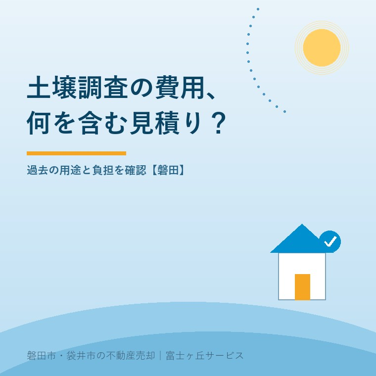
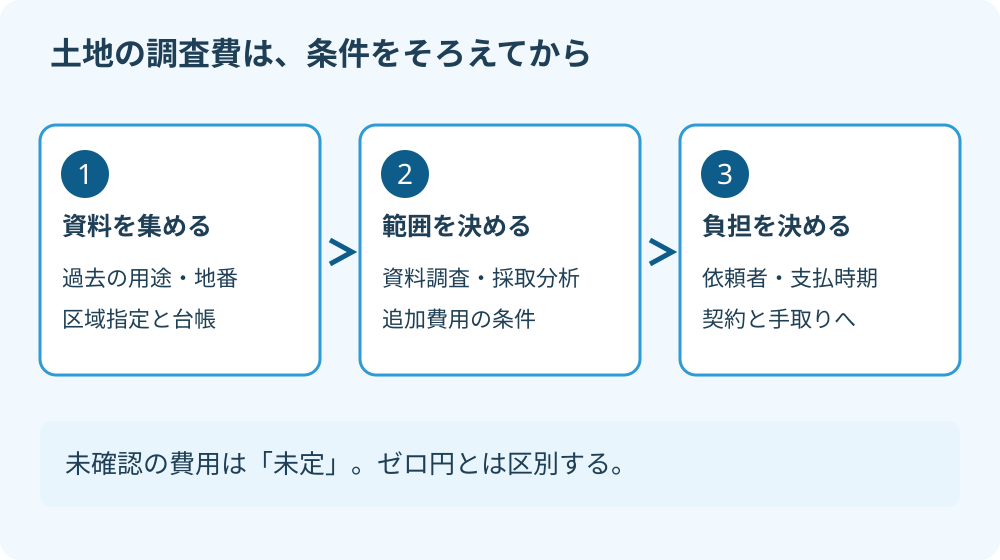

土壌汚染調査の費用｜磐田の土地売却前に確認
2026年9月24日｜カテゴリ：土地売却・調査費用

この記事の要点
Q. 土地を売る前の土壌汚染調査は、いくら見ておけばいいですか？
土壌汚染調査費は、過去の用途、調査範囲、採取・分析の内容をそろえて個別に見積もります。区域指定一覧だけで汚染の有無や費用は決められず、追加調査と売買契約上の負担も分けて確認します。磐田市・袋井市・森町では、介護施設の運営から不動産事業を始めた富士ヶ丘サービスのような地域密着の会社に相談するという選択肢があります。
大石浩之（磐田市／不動産業）です。宅地建物取引士として、土地の売却価格を考える前に整理したい調査費の話を書きます。親から引き継いだ土地に、昔は何があったのか分からない。そうした段階で「調査はいくらですか」と聞いても、金額だけでは比較できません。
先に決めるのは、何を確かめるための調査なのかです。この記事では、土壌汚染調査の一律の相場を置きません。県の一覧には定額の料金表示がなく、個別の土地の見積もりも確認していないためです。

県の区域指定一覧は、費用表でも安全証明でもない
静岡県オープンデータの「区域指定の状況（土壌汚染対策法）」は、2026年9月18日現在の一覧です。2026年9月24日にブラウザで本文と更新日時を確認しました。静岡市、浜松市、沼津市、富士市の4市は掲載対象外です。
県の説明では、一覧は台帳から区域の区分、指定番号、指定年月日、所在地、面積、不適合項目を抜粋した資料です。一覧と台帳の情報が異なる場合は、台帳の内容が優先されます。磐田の土地を調べる入口には使えますが、住所を検索して終わりにはできません。
一覧に載っていないことは、「その土地を調査した結果、汚染がなかった」という証明ではありません。指定された区域の一覧と、全土地の検査結果の一覧は違います。過去の使い方が分からないまま、非掲載を調査済みという意味に置き換えないでください。
私は、一覧が公開されている点を評価します。売主も買主も、区域の情報を自分で確かめる入口を持てるからです。そのうえで仲介の説明には、一覧の確認日と、台帳を確認したかどうかを残したい。検索結果を見ただけなのか、対象地の範囲まで照合したのかが分かる説明にします。
区域の区分は、その後の確認を分ける手がかりです。名称だけで工事の可否や売却の可否を判定せず、対象の地番と位置図を持って担当窓口へ相談します。
調査費は、どこまで調べる見積もりかで比べる
土壌汚染調査の見積もりは、資料による土地利用の確認、現場の採取・分析、結果の報告という作業範囲をそろえて比べます。「一式」の総額だけでは、安い理由も追加請求の条件も読み取れません。
環境省は、土壌汚染対策法に基づく調査及び措置に関するガイドラインなどを公開しています。調査と、汚染が確認された後の措置は分けて扱う領域です。法令に基づく調査が必要か、その方法をどうするかは、担当窓口と指定調査機関などへ確認します。
私は見積依頼の際に、次の欄を同じ形で埋めてもらうことを勧めます。これは公定の料金表ではなく、売主が発注条件を整理するための表です。各作業が必ず必要になるという意味ではありません。
| 比較する欄 | 見積書で確認する内容 |
|---|---|
| 資料の確認 | 対象の期間・土地の範囲、収集する資料、現地確認を含むか |
| 採取と分析 | 対象物質、採取地点・深さ、試料数、分析項目を決める根拠 |
| 現場の条件 | 建物・舗装・搬入路の制約、作業後の復旧、立会いの要否 |
| 納品と追加 | 報告書、説明、納期、追加調査の条件、税・諸経費 |
最初の資料確認で分からないことが残れば、その先の調査内容も変わり得ます。初回の見積もりが、すべての分析を終える金額なのか、次の調査を設計するところまでなのかを聞きます。「追加が必要なら、発注前に連絡する」と決めておけば、家族の支出判断もできます。
地盤の強さを調べる調査と、土壌中の有害物質を調べる調査も別です。家を建てるために地盤調査をした資料があっても、それだけで土壌汚染の調査済みとは扱いません。資料の表題より、目的と調べた項目を見る必要があります。
調査の依頼者と、最終的な負担者を分けて決める
土地売却で土壌汚染調査を行う場合は、調査を発注する人、代金を支払う人、売買上の最終負担者を分けて確認します。買主が調査を希望したから買主負担、土地の持ち主だからすべて売主負担、と先に決める話ではありません。
私なら、まず調査の目的を仲介会社に整理してもらいます。法令に基づく調査なのか、買主の利用計画に伴う確認なのか、売主が説明材料を用意する自主的な調査なのか。この違いが曖昧だと、報告書が誰の何の判断に必要なのかも定まりません。
次に、立入りの許可、調査範囲、費用、結果の共有先を文書で合意します。調査結果によって追加分析が必要になった場合は誰が承認するのか。売買が成立しなかった場合にも調査代を払うのか。現場を元に戻す費用まで含め、契約前に問いを出しておきます。
調査結果が売買条件を変える可能性もあります。価格の再協議、引渡し日の変更、契約を続けられない場合の扱いを、曖昧な口約束にしないでください。具体的な条項は物件や合意内容で変わるため、仲介会社と弁護士などの専門家に確認を。
「現状のまま売る」と書けば、把握している事情の説明や法令上の義務がすべて消える、と考えるのも危険です。売買契約の責任範囲は、契約不適合責任を考える記事と併せて整理します。公法上の義務と、売主・買主間の費用分担は区別して確認します。
調査費が未定なら、手取りの欄をゼロにしない
土壌汚染調査の費用が未定の土地は、売却後の手取りも幅を持って考えます。売却価格から仲介手数料などを引いた後に、調査費や追加対応費が残るなら、家族が使える金額はまだ確定していません。
私は、調査費が分からないことと、ゼロ円でよいことは違うと考えます。価格だけ先に決めて、分からない支出を欄外へ追い出せば、見た目の手取りは増えます。でも家族の通帳に残るお金は増えません。不動産屋として、ここを都合よく丸めたくありません。
たとえば説明用の仮定として、売却価格が1,000万円、土壌関係を除く売主負担が80万円なら、残りは920万円です。調査等の売主負担をX万円と置くと、手取りは920万円からX万円を引いた額になります。これは相場ではなく、未知の費用を隠さないための計算例です。
調査費の見積もりが出ても、追加調査や汚染確認後の対応費を含むかは別に確認します。初回調査、追加調査、対応工事を同じ欄へ混ぜず、確定・概算・未定と表示します。売却後の手取りで考える方法にも、この区分を加えてください。
私が迷うのは、資料が乏しい土地で、売り出す前にどこまで調べるかです。根拠なしに大きな調査を勧めるのも、買主が決まるまで何も見ないのも、売主に負担を寄せます。だから、過去の用途と区域指定を先に確認し、次に必要な調査の理由を専門家に説明してもらう順番にします。
磐田の土地は、過去の用途を一枚に整理する
磐田市で土地を売る準備は、所在地と地番、分かっている過去の用途、保管資料の有無を一枚に整理するところから始められます。町名だけで汚染を推測せず、その土地の情報を調べる姿勢を保ちます。
家族が知っている使い方、古い図面や写真、賃貸していた期間、以前の調査報告書があれば集めます。「昔は工場だったと思う」といった話は、事実と未確認の記憶を区別して書きます。不明な期間は空欄にせず「不明」として、調査機関へ渡します。
売却準備で造成や掘削も考えているなら、土壌の話だけで着工を決めないでください。土地を動かす工事の確認は、磐田で整地前に確認する許可にもつながります。土を調べる段取りと、土を動かす段取りを別々に確認します。
- 県の一覧と、必要に応じて台帳で対象地を照合する。
- 調査機関へ用途と資料を渡し、見積もりの範囲を聞く。
- 調査費の負担と追加費用の承認方法を契約前に決める。
富士ヶ丘サービスは、磐田・袋井を中心に介護と不動産を一体で相談し、家族が困らない売却を支えます。私は、調査費を見込めないまま売却を急がせず、家族が判断できる費用表を先に整えるよう案内します。土地ごとの調査義務、契約、税務・登記・相続の個別判断は専門家に確認を。
よくある質問
土地売却前の土壌汚染調査では、指定の有無と調査費の負担を別々に確認します。
- 県の区域指定一覧に載っていなければ、調査は不要ですか？
- 一覧に載っていないことだけで、調査不要や汚染がないと判断することはできません。一覧は区域指定の情報であり、すべての土地の調査結果を示す資料ではないためです。過去の用途や資料、予定する工事、買主からの条件を整理し、法令上の調査の要否は県の担当窓口と指定調査機関などに確認してください。
- 土壌汚染調査の費用は、売主が必ず払いますか？
- 売買当事者間の費用負担を、売主が必ず全額払うと一律には決められません。調査の目的、依頼者、範囲、追加費用の承認者を整理し、契約前に負担を合意します。ただし、当事者間の合意だけで法令上の義務がなくなるわけではありません。行政上の扱いは担当窓口へ、契約条項の個別判断は弁護士などの専門家に確認を。
- 調査の見積額だけを売却価格から引けばよいですか？
- 初回の調査費だけでは、売却後の手取りを確定できない場合があります。追加の採取・分析、報告書、現場の復旧が含まれるかを確認します。汚染が確認された後の対応費は、調査費とは別に整理してください。見積もりがない費用は未定と表示し、仲介手数料など他の支出も分けて、売買条件と一緒に見直します。

この記事を書いた人：大石浩之（磐田市／不動産業・宅地建物取引士）
富士ヶ丘サービス株式会社。介護施設の運営から不動産事業を始め、磐田市・袋井市・森町で、介護と相続、実家の売却を一体で相談できる窓口を設けています。家族が困らない売却のため、資料と現地の条件を一件ずつ整理します。著者プロフィール
本記事は2026年9月24日時点の公開情報と筆者の意見です。制度・数値・手続は変更されることがあります。個別の取扱いは担当窓口へ、税務・登記・相続の個別判断は税理士・司法書士・弁護士などの専門家に確認を。